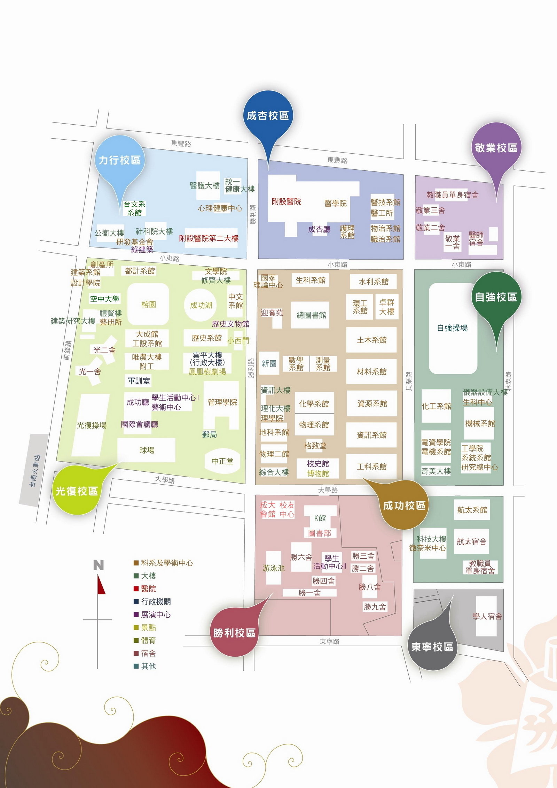

交通資訊
自行開車（國道路線）
南下：
沿國道一號南下 → 下永康交流道右轉 → 沿中正北路、中正南路(南向)往台南市區直行 → 中華路左轉 → 沿中華東路前進 → 於小東路口右轉，直走即可抵達本校。 【自國道三號南下者，轉國道8號（西向），可接國道一號（南向）】
北上：
沿國道一號北上 → 下仁德交流道左轉 → 沿東門路(西向)往台南市區直走 → 遇林森路或長榮路右轉(北向)，即可抵達本校。 【自國道三號北上者，轉86號快速道路（西向），可接國道一號（北向）】
沿國道一號南下 → 下永康交流道右轉 → 沿中正北路、中正南路(南向)往台南市區直行 → 中華路左轉 → 沿中華東路前進 → 於小東路口右轉，直走即可抵達本校。 【自國道三號南下者，轉國道8號（西向），可接國道一號（南向）】
北上：
沿國道一號北上 → 下仁德交流道左轉 → 沿東門路(西向)往台南市區直走 → 遇林森路或長榮路右轉(北向)，即可抵達本校。 【自國道三號北上者，轉86號快速道路（西向），可接國道一號（北向）】
搭乘火車
於台南站下車後，自後站出口（大學路），大學路左側即為本校光復校區。
搭乘高鐵
搭乘台灣高鐵抵台南站者，可至高鐵台南站二樓轉乘通廊或一樓大廳1號出口前往台鐵沙崙站搭乘台鐵區間車前往台南火車站，約30分鐘一班車，20分鐘可到達台南火車站
於台南站下車後，自後站出口（大學路），大學路左側即為本校光復校區。
※台灣高鐵轉乘服務資訊
於台南站下車後，自後站出口（大學路），大學路左側即為本校光復校區。
※台灣高鐵轉乘服務資訊
系館分布圖

飯店資訊
台南老爺行旅
行旅客房（單人房）：1間2,600元
精緻客房（雙人房）：1間3,200元
訂房及付費方式
請填寫「訂房單」及「付款單」，傳真至老爺行旅行銷業務部林慧姿副理（傳真：06-2386286），即可完成訂房。
退房聯絡資訊
請於9/7前電洽老爺行旅行銷業務部林慧姿副理(電話：06-2366168)，9/8退房將被扣訂金。
飯店交通
可逕行開車前往或搭乘承辦單位安排之往返接駁車。